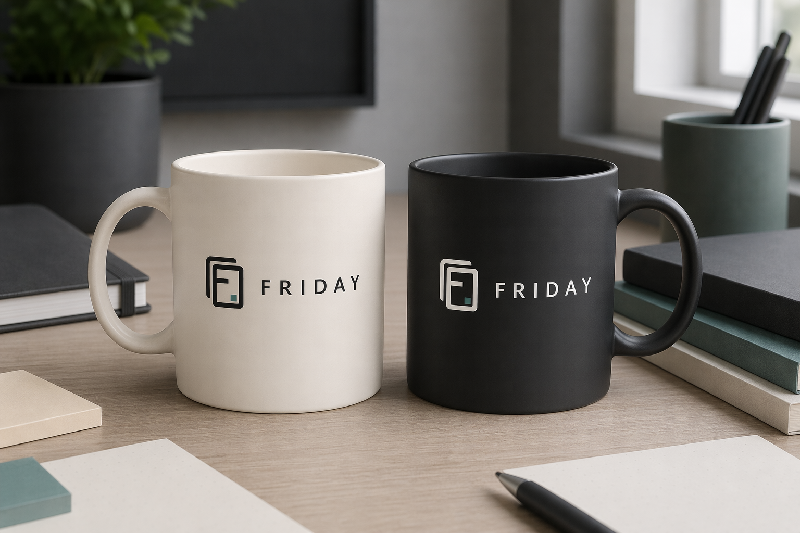
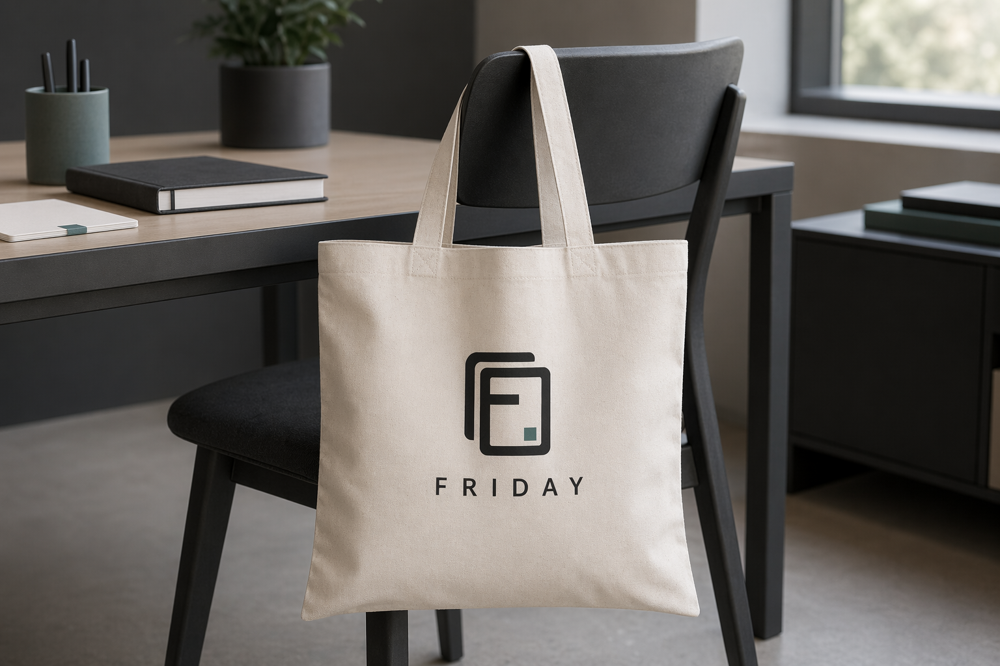
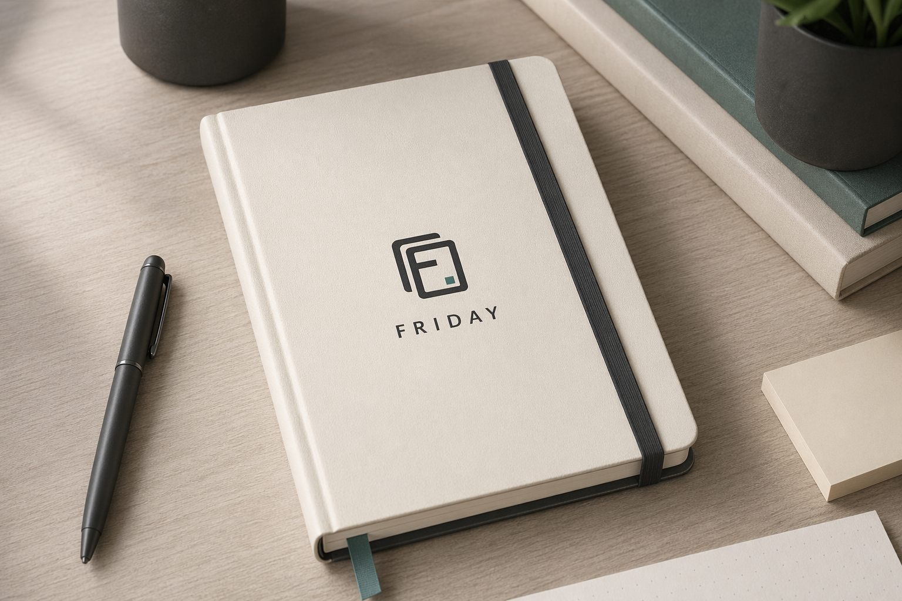
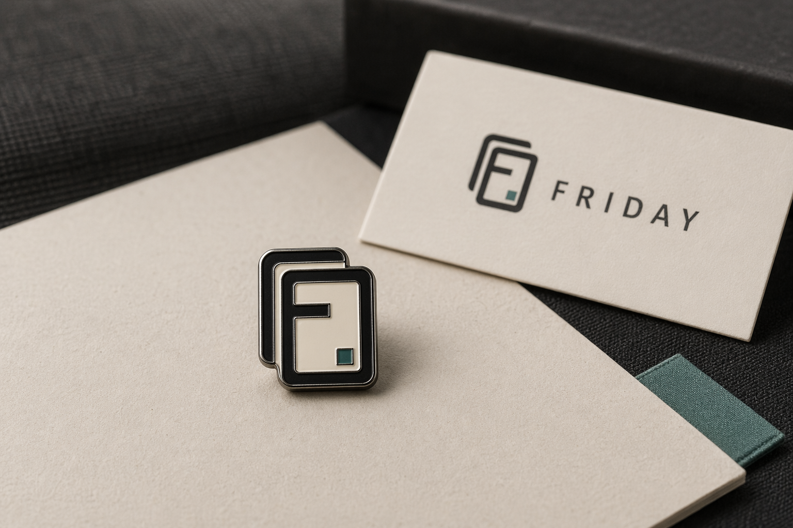
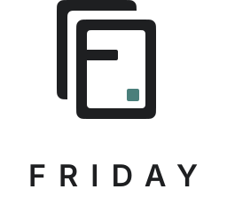
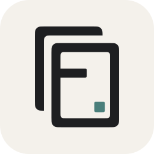

FRIDAY 是围绕 Obsidian 运转的本地 AI 工作伙伴，而不是要求用户迁移到另一套系统。它进入的是用户已经形成的笔记、项目、任务和对话，把分散上下文收拢起来，处理重复和低价值摩擦，并在需要时提供稳定、克制、可解释的协助。
Part 01 · Design Philosophy
设计理念
这一板块定义 FRIDAY 的产品判断、Double Shell Frame、F 融入框架与用户主权。
Core Principle
复杂能力退到背后，用户始终掌控。
视觉标准只有一个核心判断：复杂能力可以很深，用户入口必须轻、清晰、可控。
Double Shell Frame 把这种关系翻译成图形：外层像保护壳，代表本地优先、版本管理和知识边界；内层像被妥善组织的工作空间，承接用户真正触达的笔记与行动。F 从框架中自然形成，说明识别来自结构，而不是外加的装饰。
使用这套视觉时，先判断它是否让工作更安静、更清晰、更可控。凡是让 FRIDAY 显得炫技、神秘、强代理或过度未来的设计，都应回退到更低侵入的表达。品牌资产要帮助用户建立信任，而不是把注意力从思考和写作上夺走。
Quiet Presence
安静在场
FRIDAY 不以强势代理人的姿态接管工作，而是在需要时提供上下文、整理和执行支持。
Double Layer
双层结构
外层像保护壳，内层像被组织好的工作空间，表达前台轻、后台深的产品结构。
Embedded Mark
F 融入框架
F 不是单独放入框内的字母，而是从框架中自然形成，象征把混乱信息压缩成结构。
User Sovereignty
用户主权
视觉保持克制，是为了强调 FRIDAY 辅助判断而不替代判断，始终把控制权留给用户。
Part 02 · VI Standards
VI 规范
这一板块收拢 FRIDAY 的严谨规则：Obsidian 插件内露出、字体、颜色、几何结构、尺寸留白、背景反白和错误用法。它服务于长期一致性，而不是一次性的展示效果。
Obsidian Plugin Usage
Obsidian 插件内图标与头像规范
FRIDAY 在 Obsidian 中应尽量安静地存在。侧边栏、页面内小图标和对话头像都使用紧凑图标，不在小尺寸环境里重复完整 Logo。品牌字样统一写作 FRIDAY，不再使用 F.R.I.D.A.Y 作为界面字标。
侧边栏 / Ribbon 图标
使用插件内注册的 friday-double-shell 单色图标，跟随 Obsidian 主题的 currentColor。视觉尺寸控制在 18-20 px，不使用通用 AI 图标替代。
页面内小图标
用于工作台页头、页面标题、状态摘要和设置标题附近。推荐 16-22 px，和文字基线居中。旁边已有 FRIDAY 字标时，不再重复横向组合。
对话头像
assistant 头像使用 22-28 px 圆角方形容器，内部放置单色 Double Shell 图标。圆角建议为 6 px，不使用文字、emoji 或机器人图标。
| 插件字标 | 界面统一写作 FRIDAY。工作台页头、设置标题、assistant 角色名使用 Avenir Next, Inter, Segoe UI, Arial, sans-serif，600 字重，0.14-0.18em 字距。 |
|---|---|
| 颜色 | 小尺寸图标优先单色。Muted Teal 保留给选中态、状态点和系统响应，不强行放入 16-20 px 的 Ribbon 图标。 |
| 路径兼容 | F.R.I.D.A.Y/ 可以作为历史 Vault 目录或迁移兼容路径保留，但不作为新的界面品牌写法。 |
Typography
字体规范
FRIDAY 的字体系统要同时服务两个目标：英文标识保持稳定、轻量和专业；中文表达以霞鹜文楷为主视觉，保留知识工作、笔记和长期写作的温度，同时避免在高密度产品界面里牺牲清晰度。
FRIDAY
英文字标
当前 SVG 字标使用 Avenir Next, Inter, Segoe UI, Arial, sans-serif 字体栈，设计基准是 Avenir Next。它兼具几何结构和人文曲线，和双层框架的稳定感匹配，但不会像纯几何字体那样冷硬。
工作可以更从容
中文品牌标题
推荐 LXGW WenKai Screen, LXGW WenKai, Noto Serif SC, Source Han Serif SC 作为中文品牌标题方向。霞鹜文楷是首选，它有写作和手稿感，但结构足够克制，不会把 FRIDAY 推向书法化或装饰化。
本地知识与上下文收拢
中文正文与产品 UI
品牌文稿和说明正文可使用 LXGW WenKai Screen，让文字更接近笔记和知识沉淀场景。插件 UI、设置项、列表和表格仍使用现代无衬线，优先保证密度、速度和 Obsidian 内部一致性。
logo/friday-icon.svg
代码与文件名
路径、版本号、代码和文件名使用 SFMono-Regular, Cascadia Mono, Consolas, Liberation Mono, monospace。等宽字体只用于技术信息，不作为品牌气质主来源。
| 正式字标 | 当前 SVG 仍是文本层，设备没有 Avenir Next 时会回退。正式发布、印刷、官网主视觉和应用商店物料建议把 FRIDAY 字标转为轮廓。 |
|---|---|
| 中文标题 | 霞鹜文楷为首选，用于品牌页、文档封面、VI 标准页和少量强调语句。字号较小时优先使用 Screen 版本。 |
| 中文正文 | 品牌叙述、视觉手册正文可使用霞鹜文楷 Screen。插件内部 UI 继续使用现代无衬线，Windows 默认环境可以回退到 Microsoft YaHei UI，但不作为品牌标题首选。 |
Color
颜色规范
FRIDAY 的色彩应该保持克制。Graphite 提供专业和稳定感，但不应该作为所有正文的满值默认色。普通说明文字使用柔和墨色，Warm Bone 保留文档场景中的温度，Muted Teal 只作为理性、低侵入的功能色。
Graphite
主标志、字标、正文文字和严肃界面表面。
#1E1F21
Warm Bone
浅色背景、文档底色、反白标志主体。
#F4F1EB
Muted Teal
状态、连接和系统响应的克制功能色。
#4A7F7B
Stone
分隔线、辅助底色和低层级界面元素。
#D9D5CA
Accent
少量用于重要状态或提醒，不作为主品牌色。
#E07A5F
Geometry
几何结构与标志逻辑
标志不是由描边搭出来的线框，而是由稳定的填充轮廓构成。这样可以减少不同浏览器、操作系统和导出工具之间的 stroke 渲染差异。
Double Shell Frame
后方框架表达保护壳和后台能力，前方框架表达用户触达的工作空间。两个框架层叠，但不应被裁切成普通 app 方块。
F 融入框架
F 由前景框架和中段结构共同形成。不要额外绘制一个独立 F，也不要把 F 放进一个空框里。
圆角逻辑
外层轮廓采用 8 px 圆角逻辑，内部开口、框架内缘和结构切入采用 6 px 圆角逻辑。
安全边距
主图标使用 viewBox="-8 -8 128 150"，紧凑源文件使用 viewBox="0 0 112 134"。
Size & Clear Space
尺寸与留白
图标最小可用尺寸为 16 px。横向组合最小建议宽度为 120 px。所有标志四周都应保留至少等于 F 中段横条高度的安全空间。
| 图标最小尺寸 | 16 px 高。低于该尺寸时优先使用 `logo/friday-favicon.svg` 或单色版本。 |
|---|---|
| 产品界面尺寸 | 推荐 20 px 到 32 px 高，适合侧边栏、标签、工具栏和状态区域。 |
| 横向组合尺寸 | 最小建议宽度 120 px，页眉、封面和宣传图中建议使用 160 px 或更大。 |
| 安全空间 | 标志四周至少保留一个 F 中段横条高度的空白，不放文字、边框或其他图形。 |
Background
背景与反白使用
浅色背景使用 Graphite 主体版本，深色背景使用 Warm Bone 反白版本。Muted Teal 功能色在两种版本中都应保持一致。
Incorrect Usage
错误用法
以下示例说明标志使用中的常见错误。所有场景都应使用标准源文件，并保持结构、比例、颜色和字距一致；不要通过截图截取、手动排字或后期效果重新制作标志。
Export
导出与交付建议
| 目标格式 | 来源文件 | 建议尺寸 |
|---|---|---|
| PNG UI 图标 | logo/friday-icon.svg | 16 px、20 px、24 px、32 px、48 px，按 1x、2x、3x 导出。 |
| Favicon | logo/friday-favicon.svg | 16 px、32 px、48 px，可进一步生成 ICO。 |
| Touch icon | logo/friday-app-tile-rounded.svg | 180 px、256 px、512 px。 |
| 文档与官网 | logo/friday-logo.svg / logo/friday-logo-reversed.svg | 优先直接使用 SVG，只有在平台不支持时再导出 PNG。 |
| 插件市场 | logo/friday-plugin-tile-square.svg | 256 px、512 px、1024 px。 |
{kind=link}
{kind=link}
{kind=link}
{kind=link}
{kind=link}
{kind=link}
Part 03 · Visual Manual
视觉手册
这一板块展示 Logo 在具体场景中的使用模拟。图片由 image-gen 生成场景气氛和物料背景，再用 FRIDAY SVG 与水印规则统一品牌识别，避免让生成模型直接决定最终 Logo 细节。
Visual Manual
周边与真实场景使用模拟
视觉手册图片用于展示 FRIDAY 在真实物料中的存在方式：清晰、克制、低侵入。所有场景图左下角统一添加品牌水印，水印只承担归属提示，不参与主体构图，也不遮挡产品上的主标志。

黑白马克杯
用于展示浅色与 Graphite 深色载体上的反差关系。杯身主标志保持印刷真实感，左下角水印用于视觉手册归档。

帆布袋
适合品牌活动、线下交流和轻量周边。图像应保留织物纹理和自然褶皱，避免过度商业广告感。

笔记本
对应知识沉淀、写作和项目记录场景。封面标志宜小而稳定，保留足够留白。
MacBook 贴纸
适合开发者工作流和本地工具语境。贴纸可使用 Warm Bone 底与 Graphite 图形，Muted Teal 保留为细节识别。

胸针
小尺寸周边优先使用图标本体，不强行放入完整字标。背卡可出现 FRIDAY 字样，保持材质和比例清晰。
| 水印位置 | 统一放在图片左下角，距离图片边缘约 2%-3% 宽度，不贴边，不压住主体产品或主标志。 |
|---|---|
| 水印尺寸 | 横向组合宽度约为图片宽度的 10%-14%，最小 104 px，最大 154 px。移动端可按容器等比缩放。 |
| 水印样式 | 使用反白横向组合放入半透明 Graphite 底板，底板圆角 6 px，透明度保持克制，确保在浅色和复杂照片上都可读。 |
| 交付文件 | visual-manual/originals/ 保留无水印原图，visual-manual/watermarked/ 提供已烘焙官方水印的 PNG，可直接用于 PPT、PDF、发布图和外部文档。 |
Part 04 · Asset Catalog
资产目录
这一板块保留标准 SVG 源文件和使用索引，作为后续 PNG、ICO、ICNS、应用图标、文档物料和外部发布图的源头。日常使用优先查这里。
Logo Source Set
Logo SVG 资产
所有 SVG 都放在当前目录中，作为后续 PNG、ICO、ICNS、应用图标和文档物料的唯一源文件。优先使用下列标准文件，不要从截图或旧版本中重新裁切。
{kind=link}
{kind=link}

{kind=link}

Usage Map
不同场景应该使用哪个文件
| 场景 | 推荐资产 | 使用说明 |
|---|---|---|
| 产品界面内导航 | logo/friday-icon.svg | 当界面附近已经出现 FRIDAY 名称时，图标版本更轻，不会抢占工作内容。 |
| 文档封面与页眉 | logo/friday-logo.svg | 需要明确品牌识别时使用横向组合，背景优先选择 Warm Bone、白色或浅中性色。 |
| 深色品牌区域 | logo/friday-logo-reversed.svg | 将反白版本放在 Graphite 或足够深的背景上，保持 Muted Teal 方块不变。 |
| 应用图标 | logo/friday-app-tile-rounded.svg | 系统级图标使用 tile 版本，不要把裸图标强行裁成圆角方块。 |
| 插件市场与仓库封面 | logo/friday-plugin-tile-square.svg | 方形 tile 更适合统一网格列表，可避免外部平台自动裁切标志主体。 |
| 极小尺寸或单色环境 | logo/friday-icon-mono.svg | 当功能色在小尺寸下不清晰，或环境只能接受单色时使用。 |